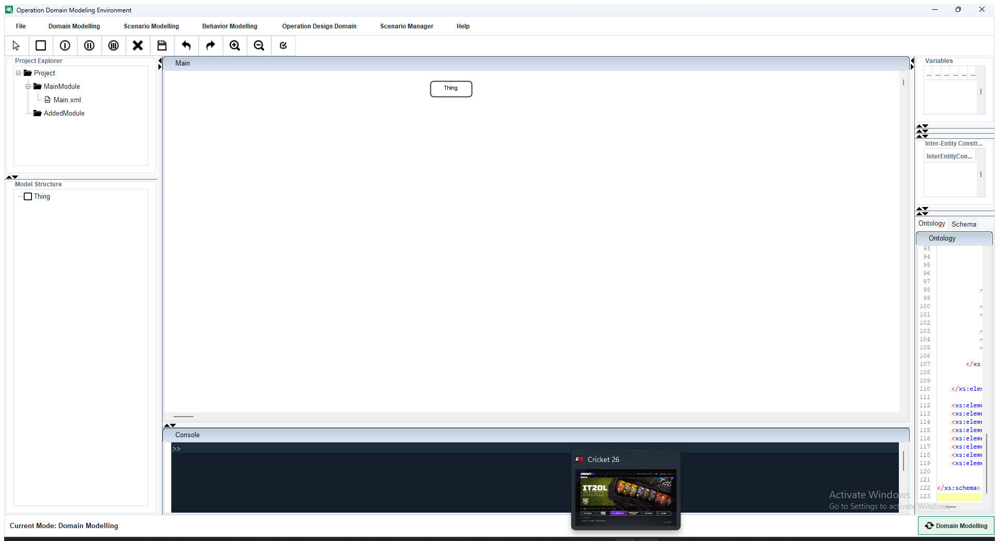

A practical user manual for the current ODME desktop application, including
the modeling workflow, the main modes, ODD and scenario tooling, execution
support, and packaged application usage.
Best way to learn ODME: start with Domain Modelling,
validate your model, then switch to Scenario Modelling for
pruning and scenario-specific work.
Main purpose: author SES-based domain models, derive PES/scenarios, manage ODD data, generate samples, and support downstream automation workflows
Contents
What ODME is
What ODME produces
How to start the application
Main window overview
Recommended workflow
Domain Modelling mode
Scenario Modelling mode
Behavior Modelling
Operation Design Domain and ODD Manager
Scenario Manager and sample generation
Execution and Python plugin support
Import from Cameo
Saving, validation, export, and packaging
Example projects
Troubleshooting
1. What ODME Is
ODME is a desktop modeling environment for creating and maintaining
Operational Design Domain (ODD) models using the
System Entity Structure (SES) formalism. A single model
can be edited graphically, inspected structurally as a tree, validated,
pruned into scenarios, enriched with variables and constraints, and exported
for downstream use.
In practical terms, ODME helps you define the operating conditions of an
AI or autonomous system, convert those conditions into testable scenario
structures, and prepare supporting artifacts such as XML, schema, YAML,
CSV, and automation-oriented outputs.
Important distinction: ODME is both a modeling tool and a
workflow support tool. Most users spend their time in the modeling modes,
while ODD generation, sample generation, execution tooling, and plugin support
are usually later steps in the process.
2. What ODME Produces
Depending on the workflow stage, ODME can produce or maintain these artifacts:
Artifact
Purpose
Project XML and graph XML
The main structural model and graph layout used by the editors.
.ssd* files
Serialized supporting data such as variables, behaviors, constraints, flags, and related editor state.
xsdfromxml.xsd
Generated schema used for ODD extraction and validation-related workflows.
ODD snapshots
Saved ODD data sets stored under the project odd/ directory.
YAML and XML exports
Human-readable or machine-readable ODD outputs.
CSV sample files
Generated sample sets from the ODD or YAML-based constrained sampling pipeline.
Scenario XML files
Generated scenario files from CSV or pruned scenario work.
Python-friendly outputs
Execution and plugin workflows can translate model content for script-based automation.
3. How to Start the Application
Packaged Windows application
Open the generated ODME application folder.
Double-click ODME.exe.
Keep the full ODME folder together; do not move the executable by itself.
Packaged macOS or Linux application
Open the packaged application folder or app bundle.
Launch the ODME application from that package.
Run from source
Build the application JAR.
Run the shaded JAR or launch odme.odmeeditor.Main from your IDE.
Recommended for normal users: use the packaged desktop application,
not the source tree, unless you are actively developing the tool.
4. Main Window Overview
The main ODME window is organized around a synchronized tree-and-graph editing workflow.

Typical ODME main window. The left side contains the project and structure views,
the center contains the graph editor, the right side contains node-related data panels,
and the bottom area contains viewers and console output.
Menu bar Accesses file actions, modeling modes, ODD tooling, scenario management, tools, and help.
Project tree Shows the current project structure and related files.
Model tree Shows the SES structure as a hierarchical tree synchronized with the graph editor.
Graph canvas The main visual workspace for creating entities, aspects, specialization nodes, and relationships.
Right-side data panels Variables, distributions, behaviors, inter-entity constraints, and intra-entity constraints for the selected node.
Bottom viewers Ontology, schema, or XML views depending on the current mode and selected tab.
Console Displays validation feedback and operation output.
Status bar and mode switch Shows whether you are in Domain Modelling or Scenario Modelling and lets you switch between them.
5. Recommended Workflow
For most users, ODME is easiest to use as a staged workflow:
Step 1: Create or open a project in Domain Modelling.
Step 2: Build the full SES structure on the graph canvas.
Step 3: Add variables, constraints, distributions, and behaviors where relevant.
Step 4: Save and validate the project.
Step 5: Switch to Scenario Modelling.
Step 6: Create or open scenarios and prune the model into scenario-specific structures.
Step 7: Use ODD, sample generation, execution, or plugin workflows only after the model is stable.
Rule of thumb: if scenario work starts behaving unexpectedly,
return to Domain Modelling and verify the base project first.
6. Core Modes and Menus
Area
Purpose
Typical user action
Domain Modelling
Create, edit, import, validate, and export the main SES project.
Build the base model.
Scenario Modelling
Prune the domain model into scenario-specific structures and outputs.
Create and refine scenarios.
Behavior Modelling
Manage and synchronize behavior-related information for entities.
Inspect or sync behaviors after the structure is ready.
Operation Design Domain
Generate and manage ODD representations derived from the current project.
Review or export ODD data.
Scenario Manager
Work with scenario lists, execution support, feedback, and sample generation.
Manage scenario-related downstream tasks.
Tools
Run external automation helpers such as the Python plugin flow.
Integrate ODME output with scripts.
7. Domain Modelling Mode
Domain Modelling is the primary authoring mode. It is where you define the
complete structure of the operational domain before creating scenarios.
Main capabilities
Create a new project.
Open an existing project.
Import a template or import a model from Cameo.
Add entities, aspects, specialization nodes, and multi-aspects.
Edit node properties and relationships through the graph and the synchronized tree.
Add variables, behaviors, distributions, and constraints to nodes.
Save the project and export a reusable template.
Generate the XML and schema outputs used by later workflows.
What to do first
Create the structural tree.
Add variables and default values.
Add constraints and distributions only after the structure is stable.
Save and validate before switching modes.
Best practice: keep naming consistent while building the tree.
Many later actions, exports, and scenario flows assume the model structure is already clean.
8. Scenario Modelling Mode
Scenario Modelling is the working mode for deriving concrete scenario structures
from the domain model. ODME switches into this mode through the status-bar mode button.
What changes when you switch
The application changes its current mode from SES editing to PES/scenario work.
Project state is saved and scenario folders are created as needed.
The viewer tabs emphasize XML output for the active scenario.
Toolbar actions related to creating high-level structural nodes are reduced.
Typical tasks
Create a scenario.
Open an existing scenario from the scenario list.
Prune and refine the model for scenario-specific use.
Inspect the XML generated for the scenario.
Save or export the resulting scenario state.
Do not treat Scenario Modelling as the place to fix the full project design.
If the base tree is wrong, correct it in Domain Modelling first and then regenerate the scenario state.
9. Behavior Modelling
The Behavior Modelling menu supports behavior-related synchronization and editing work.
It is typically used after the structural model already exists and the relevant entities
have been defined.
Behavior data is presented alongside the main modeling workflow rather than as a separate main window mode.
The right-side data panels include behavior information for the selected node.
The Sync Behaviour action is used when behavior-related project data needs to be refreshed or synchronized.
10. Operation Design Domain and ODD Manager
The Operation Design Domain menu gives access to ODD generation and the ODD Manager.
These features operate on schema and model data generated from the current project.
Generate OD
This view creates and displays the current ODD from the open project and lets you inspect
or save it in the manager workflow.
ODD Manager
ODD Manager is where saved ODD snapshots are reviewed and exported. It works with the generated
schema and supports editing and export-oriented workflows.
Main ODD-related capabilities
Display the current ODD as a table.
Save ODD data to the project odd/ directory.
Export ODD content as XML or YAML.
Generate LHS-style test cases from ODD ranges.
Use the project schema data as the basis for downstream sampling workflows.
11. Scenario Manager and Sample Generation
The Scenario Manager menu groups together scenario-oriented downstream actions.
It is especially useful after a project or ODD is already in a usable state.
Scenario list
Shows the saved scenarios for the current project and lets you open or manage them.
Generate Samples
Opens the current constrained sampling workflow. In the current application line, this supports:
YAML-based scenario definition input
Latin Hypercube Sampling for continuous parameters
Constraint-aware rejection sampling
CSV sample output for downstream use
Generate Scenario from CSV
Under Save Scenario, ODME provides the Generate Scenario → From CSV
action. This converts sampled CSV rows into individual scenario XML files.
Typical sequence: derive or save the ODD, generate samples, then generate scenarios from the resulting CSV.
12. Execution and Python Plugin Support
ODME includes an Execution window and a Run Python Plugin... tool
for automation-oriented workflows.
Execution window
Load XML.
Load YAML.
Translate XML to Python-friendly structures.
Translate YAML to Python-friendly structures.
Edit or load Python scripts.
Run scripts and inspect console output.
Run Python Plugin
Select a Python script file.
ODME passes project/session context to the plugin runner.
Plugin output is streamed to the ODME console area.
This is useful for custom simulation or automation integration.
These features are powerful but are usually not the first place to start.
Use them after the project, scenario, or ODD data is already stable.
13. Import from Cameo
The Import From Cameo action is available from the Domain Modelling menu.
It is intended for workflows where operational scenario or model data already exists in Cameo
and must be transformed into ODME-compatible project content.
This is generally an integration workflow rather than a beginner workflow. If you are learning ODME,
begin with a manually created project first.
14. Saving, Validation, Export, and Packaging
Saving
File → Save stores the current project state.
File → Save As creates a renamed project copy.
File → Save as PNG exports the graph canvas as an image.
Validation and generated views
The schema and XML viewers are refreshed through the project update pipeline.
The console reports validation and generation feedback.
The schema and XML tabs should be used as working outputs, not just as debug views.
Export
Templates can be exported from Domain Modelling.
ODD content can be exported through ODD Manager.
Scenario generation can produce CSV-derived XML outputs.
Packaged application usage
The packaged application folder includes all files required by the executable.
Help → Manual opens the bundled manual shipped with the application.
If you rebuild the packaged app, rebuild the app image after code or manual changes so the packaged copy stays current.
15. Example Projects
ODME ships with example material that is useful for learning the workflow and for checking
whether your application build is behaving correctly.
RunwaySignClassifier is the main example bundled in the repository.
Custom projects such as ScenAIroTableII can also be opened, provided their expected project files are present.
If a project opens but some supporting files are missing, ODME may still load the main structure
while showing errors for missing serialized side files. Keep related project files together when
moving or copying a project.
16. Troubleshooting
The app opens but Help → Manual does nothing
Make sure you are using a freshly rebuilt application after manual changes.
Use the packaged app folder as a whole, not a copied standalone executable.
A project loads with missing-file errors
Check that the project folder contains all related XML and .ssd* files.
Open the project from its root folder, not from a nested or partial copy.
If you copied the project between old and new ODME versions, verify that the supporting constraint files were copied too.
The build works but the packaged app is missing new changes
Rebuild the packaged app image after changing code or documentation.
Re-run the packaging step, not only the JAR build step.
Sampling or execution features feel advanced
That is expected. Learn the project editing workflow first.
Return to Domain Modelling, Scenario Modelling, and ODD generation if you need a simpler entry point.
17. Final Advice
The current ODME application is most effective when used in this order:
Model the complete structure in Domain Modelling.
Validate and inspect the generated XML and schema.
Switch to Scenario Modelling for PES/scenario work.
Use ODD, sample generation, execution, and plugins once the model is already stable.
If you keep that sequence, the different menus and supporting tools fit together naturally.